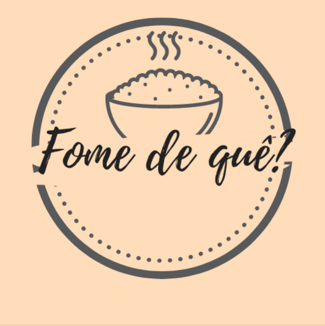

Ouça nossos episódios para melhorar sua alimentação e saúde no dia a dia.

Projeto de educação alimentar e nutricional por Thays Nascimento, do IFMA — assuntos sobre alimentação, o comer e a comensalidade.